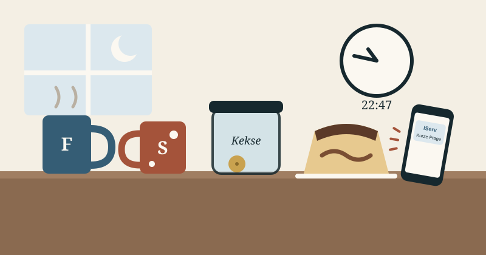

Vorbemerkung über zwei Menschen, die beruflich für Vernunft zuständig waren
Die Wilhelm-von-Maßstäbe-Gesamtschule war eine Einrichtung, an der junge Menschen auf das Leben vorbereitet wurden. Was das Leben betraf, hatte es allerdings versäumt, der Schule mitzuteilen, worauf genau.
Für die Schwierigkeiten, die sich aus diesem Umstand ergaben, gab es die Schulsozialarbeit. Und damit Sabrina und Freddy.
Sabrina besaß die bemerkenswerte Fähigkeit, menschliche Probleme innerhalb weniger Minuten zu durchschauen, benötigte jedoch gelegentlich mehrere Anläufe, um ein Sprichwort unbeschädigt ans Ende eines Satzes zu transportieren.
Bei ihr wurde die Kirche mit der Badehose ausgeschüttet, der frühe Vogel fiel nicht weit vom Stamm, und wer anderen eine Grube grub, sollte zunächst einmal vor seiner eigenen Haustür kehren.
Niemand an der Schule, außer Freddy, korrigierte Sabrina mehr. Alle anderen hatten es in den Anfangsjahren versucht, aber irgendwann festgestellt, dass erstens alle genau wussten, was sie meinte, und zweitens ihre Versionen bei näherer Betrachtung gelegentlich mehr Sinn ergaben als die Originale.
Einmal hatte sie während einer Dienstbesprechung erklärt: „Wir sollten nicht immer gleich den Teufel an die Wand werfen, nur weil das Kind im Brunnen sitzt.“
Das Kollegium hatte zustimmend genickt. Eine Kollegin hatte sich sogar Notizen gemacht. Seitdem galt Sabrina als ausgesprochen lösungsorientiert.
Sie verfügte über eine geradezu entwaffnende, bisweilen naiv anmutende Logik. Während andere Menschen ein Problem von zwölf verschiedenen Seiten betrachteten, drei Arbeitsgruppen gründeten und einen Folgetermin vereinbarten, stellte Sabrina häufig eine einzige Frage. Meistens war es die richtige. Was insbesondere diejenigen irritierte, die bereits eine PowerPoint-Präsentation vorbereitet hatten.
Freddy hingegen hatte im Laufe seines Berufslebens eine besondere Form der intellektuellen Selbstverteidigung entwickelt. Er besaß ein beträchtliches Allgemeinwissen, ein ausgeprägtes Gespür für menschliche Widersprüche und die gelegentlich unpraktische Angewohnheit, diese nicht einfach schweigend zu betrachten. Wo andere einen defekten Kopierer sahen, erkannte Freddy die Krise einer technisierten Bildungsgesellschaft. Wo andere eine Dienstbesprechung vermuteten, sah er ein gruppendynamisches Langzeitexperiment unter erschwerten Sauerstoffbedingungen. Und wo der Schulleiter „Herr Einmal noch und ich werde…“ von einer kurzen organisatorischen Abstimmung sprach, begann Freddy vorsorglich, seine privaten Abendtermine abzusagen.
Seine Bemerkungen waren selten böse gemeint. Allerdings benötigten manche von ihnen eine gewisse Reifezeit, bevor die Betroffenen bemerkten, dass sie Gegenstand einer solchen gewesen waren.
Freddy hatte grundsätzlich nichts gegen Autoritäten. Er war lediglich der Auffassung, dass Autorität und Sachverstand zwei Eigenschaften waren, die unabhängig voneinander erworben werden konnten. Die tägliche Erfahrung an der Schule lieferte ihm hierzu eine solide empirische Grundlage.
Sabrina und Freddy ergänzten sich auf eine Weise, die keine Personalentwicklungsmaßnahme hätte planen können. Freddy konnte ausführlich erklären, warum etwas nicht funktionieren würde. Sabrina hatte es währenddessen meistens schon erledigt. Er kannte die Theorie. Sie kannte die Menschen. Er zitierte Philosophen. Sie zitierte Sprichwörter, für deren Existenz sich in der gesamten europäischen Literaturgeschichte kein Beleg finden ließ. Gemeinsam verfügten sie über zwei Schreibtische, einen erstaunlich leistungsfähigen Kaffeeautomaten, eine chronisch unzureichende Menge an Keksen und einen beruflichen Optimismus, der angesichts der täglichen Ereignisse wissenschaftlich kaum zu begründen war.
Und so gingen die beiden Tag für Tag ihrer Arbeit nach. Sie berieten, vermittelten, trösteten, organisierten, schlichteten und versuchten, einem System menschliche Züge zu verleihen, das gelegentlich schon an der korrekten Zuordnung seiner eigenen Raumbelegungspläne scheiterte.
„Wir sitzen schließlich alle im selben Boot“, sagte Sabrina einmal, „und sollten deshalb nicht ständig am selben Ast sägen.“
Freddy hatte lange über diesen Satz nachgedacht. Dann hatte er ihn aufgeschrieben. Nicht, weil er falsch war, sondern weil er die Situation an der Wilhelm-von-Maßstäbe-Gesamtschule erschreckend präzise beschrieb.
Die folgenden Geschichten berichten aus ihrem Berufsalltag.
Sie erheben keinen Anspruch auf Vollständigkeit. Vollständigkeit hätte vorausgesetzt, dass die Ereignisse an dieser Schule irgendeiner nachvollziehbaren Ordnung folgten.
Entsprechende Untersuchungen laufen noch.